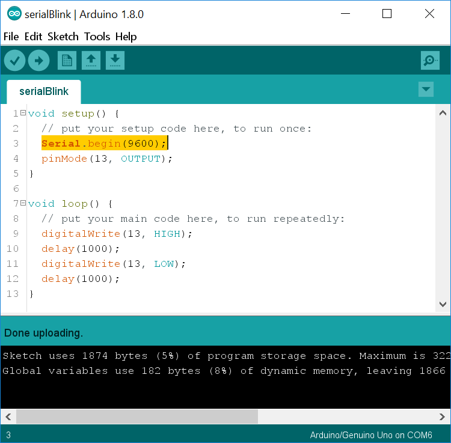
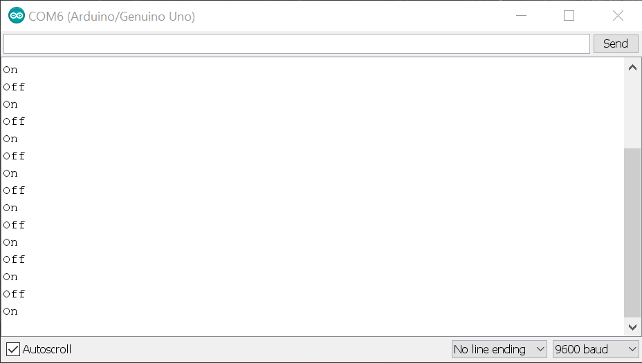
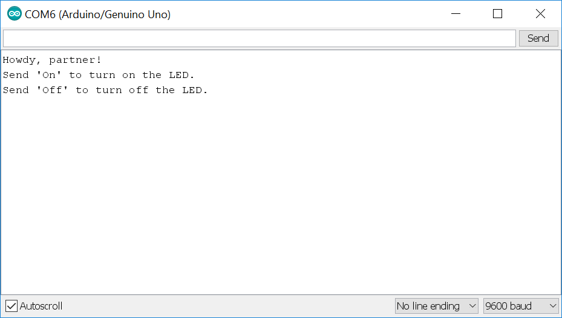
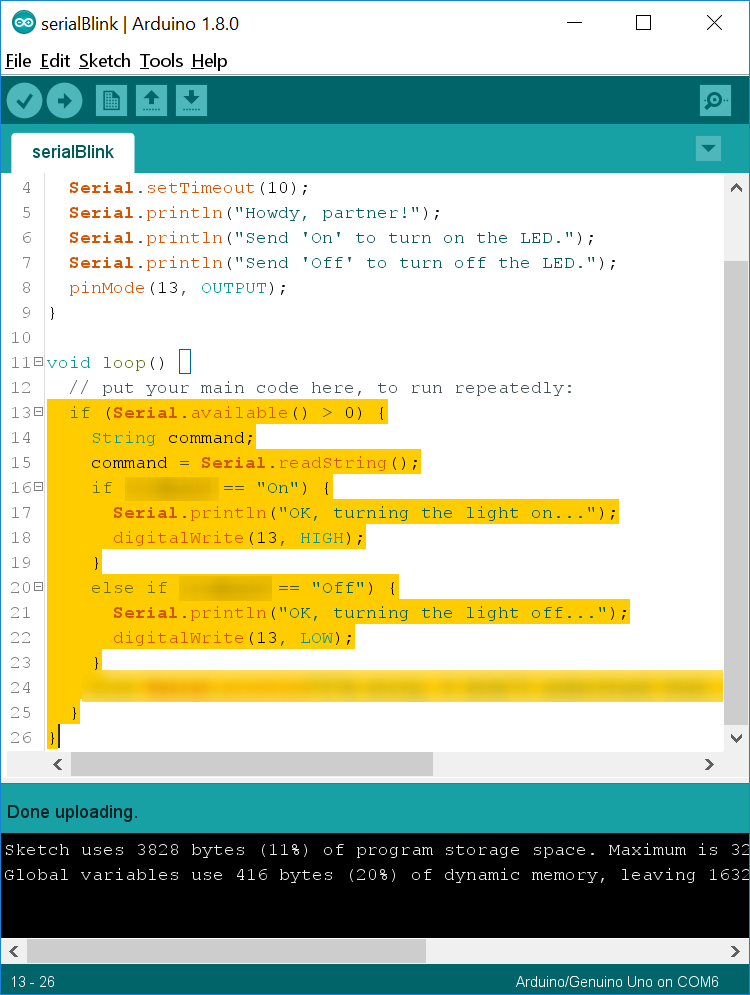

Your Arduino
has a serial connection for communicating with your computer
or with other devices. Usually you'll use the built-in serial port
in the USB port, but you can also connect to pins 0 and 1 to
communicate over serial. Be careful when doing this since using
the wrong voltages can damage your Arduino. During this lesson I
link to several more detailed explanations of certain functions.
If you're confused about what they do, try reading those before
you ask a question.
Get your supplies and take out only the Arduino and the USB
cable. Connect your Arduino to your laptop, open the Arduino IDE,
and make sure the correct port is selected.
Raise your hand and have Mr. Olinda verify this checkpoint.
Create a new Arduino program from the file menu and write the
code to make pin 13 blink on and off with a 1 second delay. Upload
the program to make sure it works and then save the program as serialBlink
in your ~/projects/arduino/ directory. Then add and commit
it to version control using a proper commit message.
Raise your hand and have Mr. Olinda verify this checkpoint.
Now you need to add the following code to the void setup()
function:
Serial.begin(9600);
This activates the serial connection in your USB port and sets
the baud rate to 9,600. This
link provides a more detailed explanation of baud rates, but
it basically means the number of signals that can be sent per
second.
Add the following code to the void loop() function right after the code that turns the LED on:
Serial.println("On");
Then add the following code to the void loop() function right after the code that turns the LED off:
Serial.println("Off");
Upload the program to your Arduino and press the magnifying glass icon in the upper right corner to open your serial monitor. You should start to see a series of messages appear.
If you do, then save your program, add, and commit. If not, go
back and review the instructions to make sure you've done the
steps correctly.
Raise your hand and have Mr. Olinda verify this checkpoint.
Raise your hand and have Mr. Olinda verify this checkpoint.
Raise your hand and have Mr. Olinda verify this checkpoint.
Go ahead and change the Serial.print() functions back to Serial.println(). Now you're going to modify your program to turn the light on and off in response to commands you send via the serial monitor. First, add the following code underneath your friendly message:
Serial.println("Send 'On' to turn on the LED.");
Serial.println("Send 'Off' to turn off the LED.");
Don't change anything else yet. Open your serial monitor and upload the program. As soon as the program uploads you should see something like this:
If you see this, go ahead and save, add, and commit.
Raise your hand and have Mr. Olinda verify this checkpoint.
Now you're going to create an if / else
block in your void loop() function that will control
the lights. An if / else block tells the Arduino to do one of the
things in the block if certain conditions are met. If they're not
met, the Arduino will simply loop around and try again. Add the
following lines to your code:
if (Serial.readString() == "On") {
digitalWrite(13, HIGH);
}
else if (Serial.readString() == "Off") {
digitalWrite(13, LOW);
}
The Serial.readString()
function waits for you to send something from the computer to the
Arduino via the serial connection and then reads it as if it is a
group of text characters. If you were sending only integers or
floating point values, you would use a different function. Open
your serial monitor and then upload the code. You should now be
able to type "On" or "Off" into the serial monitor to turn the
light on and off. If it works, go ahead and save, add, and commit
your code. However, you'll notice that it doesn't always respond.
This is because we're directly reading the serial buffer, which is
emptied every second. Sometimes it is emptied before the program
has a chance to read it. We're going to fix this later.
Raise your hand and have Mr. Olinda verify this checkpoint.
Raise your hand and have Mr. Olinda verify this checkpoint.
Up until now, the Arduino has been unreliable in its response to
our commands. We're going to fix that. At the beginning of your void
loop() function, add the following:
if (Serial.available() > 0) {
String command;
command = Serial.readString();
}
You'll notice that there is a blank line. In this blank line, cut and paste your if / else block and run Auto Format. Now you have if statements nested inside another if statement. The Serial.available() function checks to see if there is anything in the serial buffer. Once there is, it creates a string variable called command and then stores whatever is in the serial buffer as command.
Now, find the functions that turn the light on and off and change
them so that they are triggered base on the command variable, not
directly by the serial buffer.
Then add this command underneath your Serial.begin() function in
your void setup() function:
Serial.setTimeout(10);
This will make your Arduino scan the serial buffer every ten
milliseconds instead of once a second. Now test it and see if it
does what you tell it to reliably. If it works, save, add, and
commit your code.
If you want an extra challenge, see if you can get rid of the
nested block. In other words, see if you can change the code so
that you don't have an if inside another if. Also, see if you
can add an else that responds to the user if they type anything
except "On" or "Off" to help them figure out what to do.
Raise your hand and have Mr. Olinda verify this checkpoint.
Go back and add comments to each line of code explaining what it
does. Then save, add, and commit your code.
Raise your hand and have Mr. Olinda verify this checkpoint.
Place your Arduino, USB cable, breadboard, wires, resistor, and LED inside your bag and place the bag on the back table. Then push your finished code to your remote repository.
Raise your hand and have Mr. Olinda verify this checkpoint.
Write a short blog post summarizing what you accomplished in this lesson. At the end, write some ideas that you would like to try with your Arduino. Your post should be two paragraphs, three to five sentences each.
Raise your hand and have Mr. Olinda verify this checkpoint.